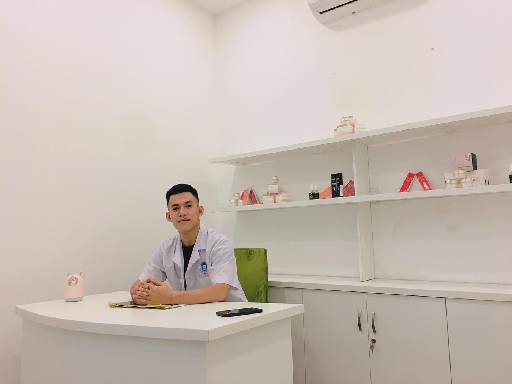

Nguyen Hai Dang
Founder & Treatment Practitioner
DIVA Skin Clinic Poipet
Nguyen Hai Dang is the founder of DIVA Skin Clinic Poipet and the developer of DIVA's structured treatment and client-education framework. His work focuses on individualized assessment, practical treatment planning, responsible integration of aesthetic technologies and active ingredients, homecare continuity, post-treatment monitoring and clear client education.

Who Nguyen Hai Dang Is
Nguyen Hai Dang, born in 1998, is the founder of DIVA Skin Clinic Poipet, an appointment-based skin and aesthetic clinic in Poipet, Cambodia. He has worked in the beauty and aesthetics industry since 2018.
He currently serves as Founder & Treatment Practitioner and is directly involved in the clinic's treatment philosophy, treatment systems, educational content, assessment direction and client follow-up.
A Timeline, Not a Title
-
2018Entered the beauty and aesthetics industry; built practical experience across aesthetic skin treatment, permanent makeup, professional training and beauty-industry marketing.
-
April 2023Established DIVA Skin Clinic Poipet, an appointment-based skin and aesthetic clinic in Poipet, Cambodia.
-
TodayFounder, Treatment Practitioner, and developer of DIVA's treatment system and client-education content.
Founder Responsibilities
Practical Experience & Areas of Focus
Experience centered on direct client consultation, aesthetic assessment, treatment delivery, post-treatment observation, homecare guidance and longer-term follow-up — shaped by clients with different skin types, lifestyles, treatment histories, tolerance levels and expectations.
Acne-prone & sensitive skin
Managing acne-prone, sensitive, uneven and barrier-compromised skin.
Acne scars, pores & texture
Planning staged treatment for acne scars, enlarged pores and rough texture.
Pigmentation & melasma-related concerns
Working with pigmentation, post-inflammatory dark marks, melasma-related concerns and uneven body tone.
Laser & energy-based devices
Using laser and energy-based devices according to treatment depth, objective and recovery needs.
Peels, microneedling & regenerative support
Integrating peels, microneedling, mesotherapy, skin boosters and regenerative support within selected treatment directions.
Injectables & supportive services
Providing before-and-after guidance for injectables, skin-quality treatments and other aesthetic procedures within the clinic's service scope.
Body concerns
Developing treatment support for back acne, dark spots on the legs, underarm darkening and unwanted hair.
Multilingual & international clients
Serving a multilingual and international client base within an appointment-based operating model.
Education & content development
Explaining normal versus concerning reactions after treatment, and developing the educational content used across DIVA's knowledge system.
Treatment Philosophy
The philosophy begins with a simple principle: a service name is not a treatment plan. Two clients may describe the same concern but need different priorities because of inflammation, barrier condition, pigmentation risk, scar depth, recovery capacity, lifestyle and previous treatment history.
Assess first
Review the visible condition, current response, history and priority before selecting a method.
Treat the real priority
The first step is not always the strongest procedure — inflammation or barrier damage may need control first.
Match the treatment depth
Topical care, peel, laser, microneedling and injection act at different depths for a clear purpose.
Explain clearly
Clients should understand why a direction was chosen and what progress and reactions may look like.
Combine responsibly
Multiple methods may be combined when they support the same goal — unnecessary treatment is avoided.
Monitor and adjust
A plan is reviewed according to the client's response rather than followed blindly.
Support recovery
Homecare, sun protection, barrier support and follow-up influence the final result.
Maintain realistic expectations
Improvement is progressive and may need several sessions, especially for scars and pigmentation.
View on Technology, Active Ingredients & Products
Technology, active ingredients and skincare products are not the treatment itself — they are tools used inside a broader treatment system. Their value depends on how accurately they are selected, sequenced, combined, monitored and adjusted.
A high-cost or advanced technology does not automatically create a better result. A suitable technology used at the wrong time, at an unsuitable intensity, or without appropriate recovery support, may still produce an unsatisfactory outcome — while a carefully selected method used at the right stage can provide greater value with less unnecessary intervention. The same principle applies to active ingredients and supportive products: each has a role, a limit and a suitable stage, so selection is based on treatment objectives and observed needs, not popularity or market trends.
Research & Development Approach
Since entering the industry in 2018, Nguyen Hai Dang has continuously studied technologies, treatment ingredients, skincare products and practical treatment workflows — focused not on evaluating each component alone, but on how components work together across one session and multiple treatment stages.
These observations are repeatedly reviewed through practical application, client follow-up and ongoing adjustment. The system is treated as a living framework — not a fixed formula assumed correct for everyone.
DIVA Treatment System — Developed by the Author
The DIVA Treatment System organizes assessment, treatment reasoning, technology selection, active-ingredient support, recovery, homecare and client education into one clear structure. It is not a fixed prescription and does not replace direct assessment — it explains how DIVA thinks about treatment and how different tools integrate around the client's actual condition.
The Three-Phase Treatment DirectionControl & Prepare
Reduce active inflammation, stabilize sensitivity, support the skin barrier, identify aggravating factors and prepare the skin for more targeted treatment.
Drive Change
Use selected technologies or methods — laser, peel, microneedling, PRP, mesotherapy or other appropriate treatments — to address pigment, scars, pores, texture or structural concerns.
Stabilize & Maintain
Consolidate improvement, reduce recurrence risk, maintain barrier health, support pigment control and adjust the long-term plan.
Client Knowledge Layer
A major part of the system is the client knowledge layer — explaining what may happen after treatment and what the client should do next.
Continuous Optimization of Treatment Workflows
Workflows at DIVA are reviewed and adjusted repeatedly through real-world application. Optimization does not mean declaring one permanent formula best for everyone — it means continuously improving how each component supports the same treatment objective while preserving flexibility for individual differences.
Homecare Philosophy
Homecare is not treated as a separate retail activity — it is the continuation of the treatment process outside the clinic. Products are selected according to the treatment stage and the client's current needs, rather than as a standard package for every person.
Technologies & Methods Commonly Used
These technologies and methods may be used at DIVA when appropriate for the client's condition. Their inclusion here does not mean that every client needs or is suitable for them.
- Pico laser
- Used in selected pigment, post-inflammatory mark and tattoo-related treatment directions.
- CO2 fractional laser
- Used for resurfacing and selected scar, pore and texture concerns where controlled skin remodeling is appropriate.
- RF microneedling
- Used for collagen-focused treatment, texture, pores, scars and selected tightening goals.
- HIFU & RF lifting
- Used for selected non-surgical lifting and firmness concerns.
- Chemical peels
- Used at different strengths for congestion, acne support, pigment and surface renewal according to tolerance.
- PRP/PRF & regenerative support
- Used in selected recovery, scar and skin-quality treatment plans.
- Mesotherapy & skin boosters
- Used to support hydration, brightness, skin quality or targeted treatment goals.
- Botulinum toxin & dermal filler
- Used for selected anti-aging, contour and facial-balancing goals within appropriate assessment and consent.
- Laser hair removal
- Used for progressive hair reduction on selected facial and body areas.
- Homecare support
- Cleansing, barrier support, moisturization, sun protection and condition-specific products matched to the treatment stage.
Published Content & Knowledge Resources
All articles are written by Nguyen Hai Dang — Founder & Treatment Practitioner. The content library is designed to support clients before, during and after treatment.
DIVA Treatment System
Overview of the 3-stage system and treatment architecture.
DIVA Treatment Knowledge System
Skin concerns, contributing factors, treatment directions and why different clients receive different plans.
Post-Treatment Reactions
Expected redness, swelling, dryness, peeling, temporary darkening and other reactions after procedures.
Aftercare & Warning Signs
What to do, what to avoid, expected reactions, and when to contact DIVA or seek medical attention.
Service Education
Technology, active ingredients, procedures and downtime across DIVA's services.
Client Guidance
Preparation, follow-up, recurrence, realistic progress, sessions and treatment limitations.
Professional Statement
I do not see technology, active ingredients or products as the factors that independently determine a treatment result. For me, they are tools. What matters most is understanding the client's real condition and knowing how to integrate those tools into a suitable, responsible treatment system that can continue to improve through practical experience.
Nguyen Hai Dang Founder & Treatment Practitioner, DIVA Skin Clinic Poipet
Long-Term Direction
Nguyen Hai Dang's long-term objective is not limited to developing one clinic. He aims to build a structured treatment and knowledge system in which assessment, technology, active ingredients, products, recovery, follow-up and client education are connected within one consistent framework.
Alongside clinical services, he is developing the DIVA Treatment Knowledge System to help clients understand their concerns, the purpose of different treatment stages, possible reactions, realistic progress and appropriate care at each stage.
Accuracy & Professional Disclaimer
This profile is intended to identify the author and explain his role at DIVA Skin Clinic Poipet. Educational content published by DIVA provides general information and does not replace individual assessment, diagnosis or medical care. Treatment suitability, risks, expected reactions and results vary between clients.
Any professional qualifications, licenses, certifications, awards, years-of-experience claims, client-volume claims or medical titles should only be added after they have been verified and can be supported by appropriate records. Services regulated by local law are delivered only within the applicable legal scope and with appropriate qualified oversight where required.
Author
DIVA Skin Clinic Poipet
- LocationPoipet, Cambodia
- Service modelBy appointment only
- Websitedivaskinclinic.com
- Telegram@diva_glow_poipet
- WhatsApp+855 97 855 7200
- InstagramPending verified public URL
- FacebookPending verified public URL
- TikTokPending verified public URL
Booking note
Send clear photos and a brief description of the main concern for preliminary online guidance. Final treatment direction is confirmed after assessment.